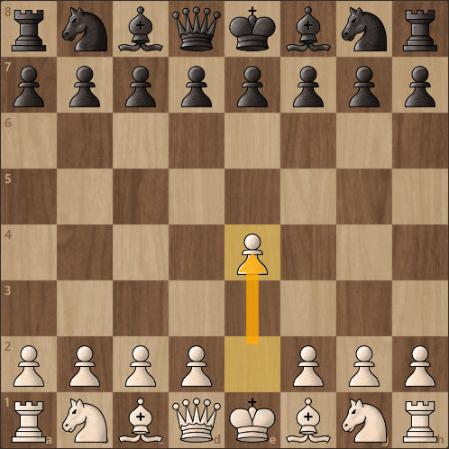
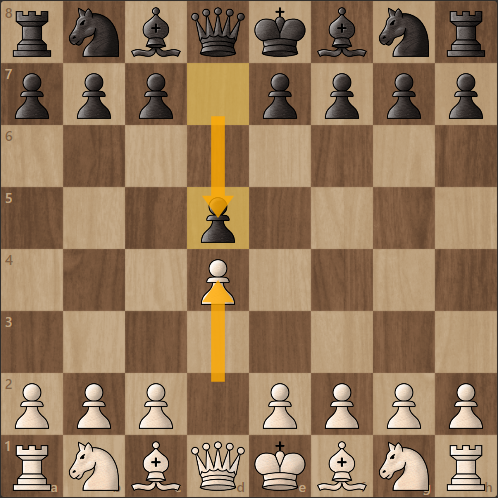
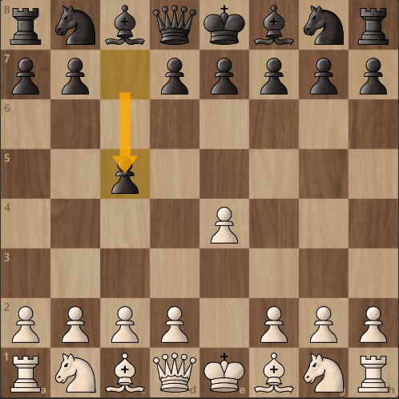
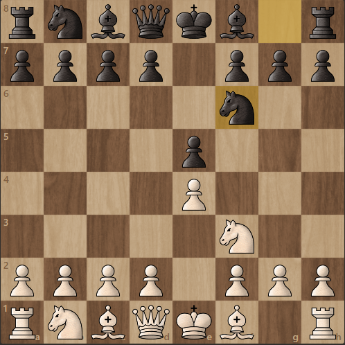

|
|
|
|
Bazele deschiderilor de șahO deschidere este pur și simplu primele câteva mișcări făcute într-un joc de șah. Cel mai probabil, vor urma una dintre sutele de secvențe clasice (sau una dintre sutele de variații ale acelor secvențe). Mai larg, însă, o deschidere se referă la prima fază a unui joc de șah, diferențiat de jocul intermediar și finalul jocului. O deschidere bună vă permite să:
Cele mai populare deschideri de șah pentru piese albe 
În șahul modern, cea mai populară mișcare de deschidere pentru alb este să aducă imediat pionul regelui în față cu două spații. (Aceasta este notată ca 1.e4.)
După 1.e4, cea mai frecventă deschidere pentru alb este d4. Acest lucru determină frecvent negrul să răspundă cu 1.d4 d5, care este denumit în mod obișnuit un joc închis. Cele mai populare deschideri de șah pentru piese negre
Deschiderea negrului va depinde aproape întotdeauna de prima mișcare a albului.
Deoarece albul este primul, deschiderile negre sunt adesea numite „apărări”, deși multe dintre acestea
(cum ar fi apărarea siciliană) pot fi, destul de agresive.


Cea mai populară mișcare pentru negru este aceea de a-și aduce nebun până la c5.
Aceasta începe clasica apărare siciliană, care a fost folosită cu mare succes de mulți dintre cei mai buni jucători din lume.
Dacă albul merge cu clasicul 1.e4, negrul are alte câteva modalități de a răspunde. 1.e4, e5 este un răspuns obișnuit, care duce la ceea ce este cunoscut ca un joc deschis. De acolo, dacă albul răspunde la 2.Nf3, negrul poate juca Nf6, configurând ceea ce este cunoscut sub numele de Apărarea lui Petrov. 5 Sfaturi pentru îmbunătățirea deschiderii tale
|
|---|